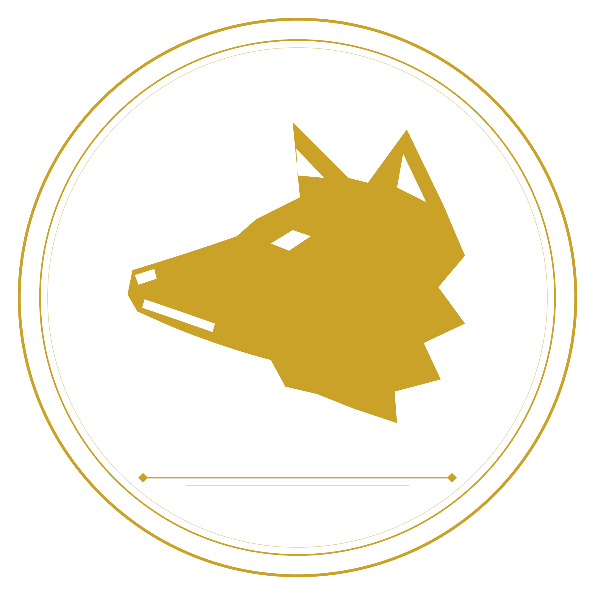

Consultor Empresarial
Artur Dell'Agnolo
Diagnósticos, cases e bastidor de consultoria empresarial.
Entrar no site →
Consultoria Empresarial · Brusque/SC
Maximino Soluções
Diagnóstico, consultoria e mentoria empresarial para empresas que querem parar de perder dinheiro sem saber onde.
Entrar no site →